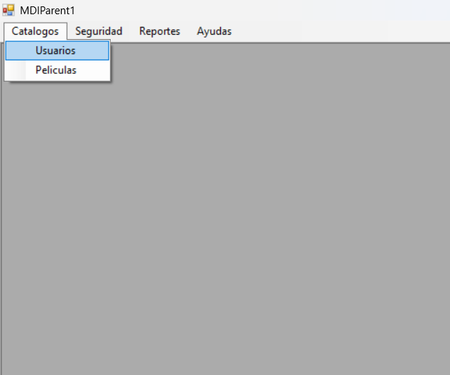
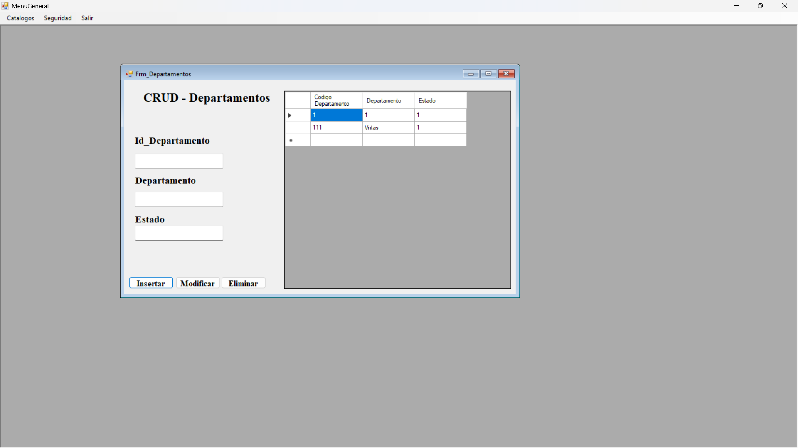
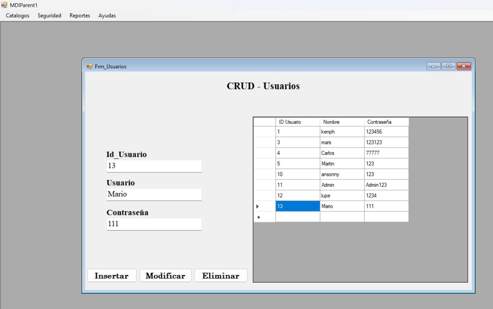
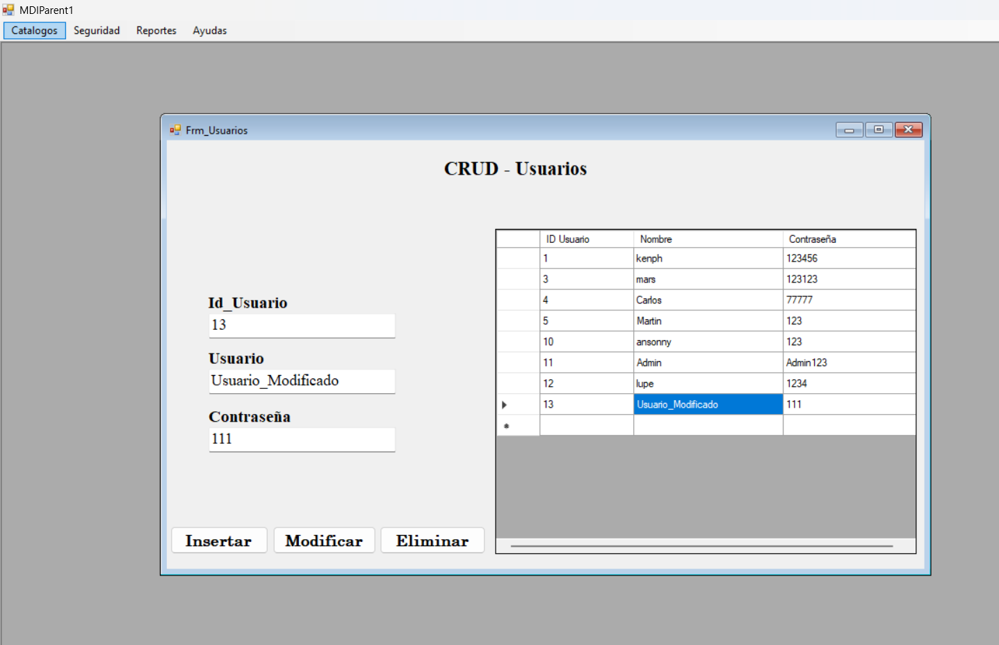
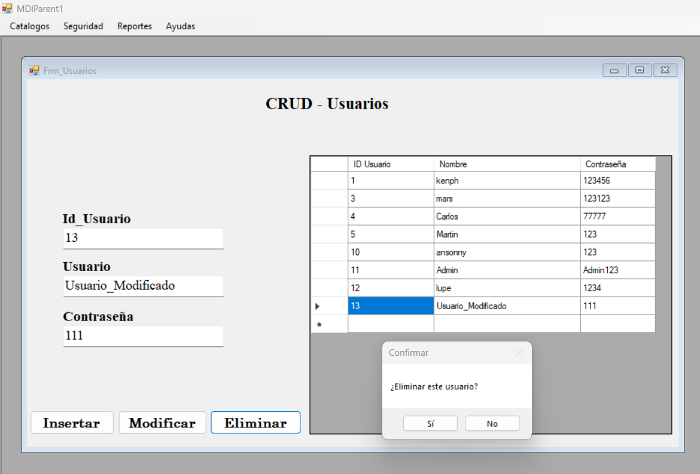

El Catalogo de Usuarios (CRUD) tiene como objetivo registrar, actualiar, borrar y leer los datos que tienen los Usuarios del sistema. Para ello debemos dirigirnos al menú de Catalgos y luego seleccionamos la opción de Usuarios.
En la siguiente imagen podremos observar el Formulario que debemos llenar. Siendo este, el CRUD al que le pertenece los Usuarios del sistema. Desde este formulario se puede gestionar todos los usuarios.
Para ingresar, Llenaremos cada Textbox con los datos respectivos, ingresando ID_Usuario, Usuario y su Contraseña. Y daremos click en el botón de Insertar, en caso que deseemos ingresar nuevos usuarios.
Para ingresar, Llenaremos cada Textbox con los datos respectivos, ingresando ID_Usuario, Usuario y su Contraseña. Y daremos click en el botón de Actualizar, en caso qué estemos buscamos cambiar algún datos, ya sea el Usuario o su Contraseña. Eliminar si es qué queremos eliminar registro de algún usuario. Al realizar alguna acción, se limpiarán las casillas de datos. Para llenar los textbox, tendremos qué colocar el ID dentro de la casilla qué se encuentra a la par del boton Buscar, el cuál le daremos click. Y con eso, podremos ver cómo es qué se llenan las casillas de datos si es qué el maestro existe en la base de datos.
Para ingresar, Llenaremos cada Textbox con los datos respectivos, ingresando ID_Usuario, Usuario y su Contraseña. Y daremos click en el botón de Eliminar si es qué queremos eliminar registro de algún usuario. Saldrá una validación De si se quiere eliminar. Al darle qué sí, entonces ese registro se eliminará de la base de datos. Al presionar cualquier botón, se limpiarán las casillas de TextBox.
